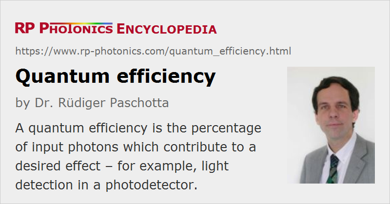

Quantum Efficiency
Definition: percentage of input photons which contribute to a desired effect
Alternative term: quantum yield
German: Quanteneffizienz
Categories: light detection and characterization, physical foundations
Formula symbol: ηq
Units: %
How to cite the article; suggest additional literature
Author: Dr. Rüdiger Paschotta
The quantum efficiency (or quantum yield) is often of interest for processes which convert light in some way. It is defined as the percentage of the input photons which contribute to the desired effect. Examples are:
- In a laser gain medium, the pump process may require the transfer of laser-active ions from one electronic level (into which the ions are pumped) to the upper level of the laser transition. This pump quantum efficiency is the fraction of the absorbed pump photons which contributes to the population of the upper laser level. This efficiency is close to unity (100%) for many laser gain media, but can be substantially smaller for others. It may depend on factors like the excitation density and parasitic absorption processes. It is not easy to measure, since the power conversion efficiency also depends on other factors, such as optical losses.
- Similarly, the quantum efficiency of fluorescence can be defined. It can be reduced by non-radiative processes such as multi-phonon transitions and energy transfer processes. If such effects do not occur, it can be essentially 100%.
- In a photodiode (or some other photodetector), the quantum efficiency can be defined as the fraction of incident (or alternatively, of absorbed) photons which contribute to the external photocurrent. (See the article on photocurrent for equations.) In the visible and near-infrared region, photodiodes can have quantum efficiencies above 90%, although values between 40% and 80% are more common. Photomultipliers can have much lower quantum efficiencies, strongly depending on the wavelength region. In case of avalanche photodiodes in Geiger mode, dead time effects are not considered for the quantum efficiency.
In some special cases, the quantum efficiency of a laser or laser amplifier can be larger than unity. This is due to certain energy transfer processes between laser-active ions, which lead to a kind of cross-relaxation: starting with one ion in some excited state, a part of its energy is transferred to some other ion, which was originally in the electronic ground state, and both ions are finally in the upper laser level. This can, of course, only happen when the photon energy of the laser transition is lower than half that of the pump light. An example, illustrated in Figure 1, is that of thulium-doped 1.9-μm fiber lasers, where ions are pumped into the level 3F2−4, and a cross-relaxation process (gray arrows) populates the upper laser level 3H4. This could in principle lead to a quantum efficiency of up to 200%. Values well above 100% can be reached in practice.
The quantum efficiency should not be confused with the quantum defect.
Questions and Comments from Users
Here you can submit questions and comments. As far as they get accepted by the author, they will appear above this paragraph together with the author’s answer. The author will decide on acceptance based on certain criteria. Essentially, the issue must be of sufficiently broad interest.
Please do not enter personal data here; we would otherwise delete it soon. (See also our privacy declaration.) If you wish to receive personal feedback or consultancy from the author, please contact him e.g. via e-mail.
By submitting the information, you give your consent to the potential publication of your inputs on our website according to our rules. (If you later retract your consent, we will delete those inputs.) As your inputs are first reviewed by the author, they may be published with some delay.
See also: quantum defect, fluorescence, multi-phonon transitions, energy transfer, photodiodes
and other articles in the categories light detection and characterization, physical foundations
|  |
If you like this page, please share the link with your friends and colleagues, e.g. via social media:
These sharing buttons are implemented in a privacy-friendly way!